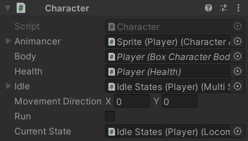

The Character component is a centralised group of references to the common parts of a character and a Finite State Machine for their actions. Anything that every character (or almost every character) would have goes here so that other scripts can simply reference a Character and access any of their other components through it.
Selection Base

Characters are set up with their visuals (SpriteRenderer and AnimancerComponent) on a child object of the Character to avoid having too many components on the root object and potentially allow the visuals to be swapped out without affecting any of the mechanical aspects of the character. The Character component has a [SelectionBase] attribute so that clicking on their sprite in the Scene view will actually select the root object with the Character component instead of selecting the object with the SpriteRenderer.
[SelectionBase]
public class Character : MonoBehaviour
{
Serialized Fields
It has several Serialized Fields with properties to allow other scripts to access but not modify) them:
[SerializeField]
private CharacterAnimancerComponent _Animancer;
public CharacterAnimancerComponent Animancer => _Animancer;
[SerializeField]
private CharacterBody2D _Body;
public CharacterBody2D Body => _Body;
[SerializeField]
private Health _Health;
public Health Health => _Health;
[SerializeField]
private CharacterState _Idle;
public CharacterState Idle => _Idle;
The OnValidate method uses AnimancerUtilities.GetComponentInParentOrChildren to automatically find references to nearby components for any fields that are null:
#if UNITY_EDITOR
protected virtual void OnValidate()
{
gameObject.GetComponentInParentOrChildren(ref _Animancer);
gameObject.GetComponentInParentOrChildren(ref _Body);
gameObject.GetComponentInParentOrChildren(ref _Health);
gameObject.GetComponentInParentOrChildren(ref _Idle);
}
#endif
Movement
The character keeps track of the direction they want to move and whether or not they are currently trying to run. These properties are set by the character's Brain and accessed by their Character Movement component:
private Vector2 _MovementDirection;
public Vector2 MovementDirection
{
get => _MovementDirection;
set
{
_MovementDirection.x = Mathf.Clamp(value.x, -1, 1);
_MovementDirection.y = Mathf.Clamp(value.y, -1, 1);
}
}
public float MovementDirectionX
{
get => _MovementDirection.x;
set => _MovementDirection.x = Mathf.Clamp(value, -1, 1);
}
public float MovementDirectionY
{
get => _MovementDirection.y;
set => _MovementDirection.y = Mathf.Clamp(value, -1, 1);
}
public bool Run { get; set; }
These are not Serialized Fields because setting their values in a Scene or Prefab wouldn't be very useful and would waste some performance. But it is still useful to see them so the custom Inspector displays them only in Play Mode.
State Machine
The Character also holds the Finite State Machine to manage their actions, but rather than a base StateMachine which would only keep track of their CurrentState, it uses a StateMachine<>.WithDefault to use their Idle state as the Default State they return to after completing other actions:
public readonly StateMachine<CharacterState>.WithDefault
StateMachine = new StateMachine<CharacterState>.WithDefault();
protected virtual void Awake()
{
StateMachine.DefaultState = _Idle;
And to make debugging a bit easier in case we ever need to log the name of an object, it adds the character's name to the name of each child object (but only in the Unity Editor and Development Builds to avoid wasting performance on it in Release Builds):
#if UNITY_ASSERTIONS
foreach (Transform child in transform)
child.name = $"{child.name} ({name})";
#endif
}
States
The only Character State that a character has by default is their Idle state. All other states are either self-contained (like the Introduction state which activates itself) or are referenced by whichever component actually tries to use them (a Character Brain that knows how to attack will have a field to assign an Attack state).
Other Finite State Machine systems often require all of the States to be defined in one place and then referred to using an identifier such as an enum or a string name, but that approach leads to unnecessary complexity and development overhead. This approach instead distributes the states where they are actually used. For example, for a character to be able to jump they require two things:
- A Jump state.
- A Brain that will actually attempt to enter that state.
The PlayerInputBrain has a field to reference a Jump state and will attempt to enter it when the player presses the Jump button (Spacebar by default). But if a brain never attempts to jump then adding a Jump state to that character would achieve nothing because they would never try to enter that state.
Inspector
Since the Movement properties and State Machine aren't Serialized Fields, they wouldn't normally be displayed in the Inspector so it has a custom Editor class:
#if UNITY_EDITOR
[UnityEditor.CustomEditor(typeof(Character), true)]
public class Editor : UnityEditor.Editor
{
It overrides OnInspectorGUI and starts by calling base.OnInspectorGUI(); to draw the default Inspector first:
public override void OnInspectorGUI()
{
base.OnInspectorGUI();
The details it wants to display are only relevant in Play Mode, so if the Unity Editor isn't in Play Mode it doesn't do anything else:
if (!UnityEditor.EditorApplication.isPlaying)
return;
Then it draws each of the additional fields:
var target = (Character)this.target;
target.MovementDirection = UnityEditor.EditorGUILayout.Vector2Field("Movement Direction", target.MovementDirection);
target.Run = UnityEditor.EditorGUILayout.Toggle("Run", target.Run);
The character's current state is a bit more complex because attempting to re-enter that state every time the Inspector is rendered could cause them to act differently depending on whether their Inspector is visible or not. So it uses EditorGUI.BeginChangeCheck and EndChangeCheck to determine when the field is actually modified and only then try to enter the newly assigned state:
UnityEditor.EditorGUI.BeginChangeCheck();
var state = UnityEditor.EditorGUILayout.ObjectField(
"Current State", target.StateMachine.CurrentState, typeof(CharacterState), true);
if (UnityEditor.EditorGUI.EndChangeCheck())
target.StateMachine.TrySetState((CharacterState)state);
}
}
#endif
}
Inspector Gadgets Pro would allow that entire Editor class to be replaced by some simple Inspectable Attributes on the fields and properties it wants to display like so:
[Inspectable]
public Vector2 MovementDirection ...
[Inspectable]
public bool Run { get; set; }
[Inspectable]
public CharacterState CurrentState
{
get => StateMachine.CurrentState;
set => StateMachine.TrySetState(value);
}